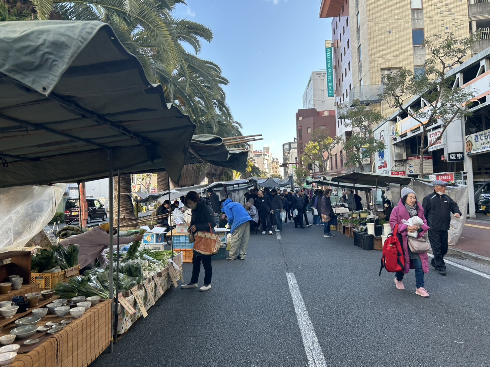

高知の現場から課題を見つける
日曜市のような地域の現場に入り、来訪者・出店者・行政の声を集めながら、 本当に困っていることを言語化します。
Kochi National College of Technology
高知DX部は、高知工業高等専門学校の学生が地域課題に本気で向き合うための新しい部活です。 2026年度から始動し、第一目標として高知県の日曜市をもっと歩きやすく、 もっと知りやすくするデジタルマップ 「nicchyo」 を育てます。 開発だけでなく、調査、デザイン、企画まで含めて高知高専らしい実践をつくっていきます。

First Objective
はじめての日曜市でも迷わず歩けるように。マップ、検索、案内役、現地での検証を 一つの体験につなげるデジタルマップを育てています。
高知高専発
授業外でも、地域で本気の実践をする2026年度
初年度メンバーとして部活づくりから関われる募集対象
開発、デザイン、調査、企画に関心のある学生Recruiting Now
高知DX部は、2026年度からスタートする高知高専の新しい実践型部活です。 日曜市デジタルマップの開発を入口に、高知県の課題をDXで解決する仲間を探しています。
応募は Googleフォーム で受け付ける想定です。実URLが決まり次第、このボタンから直接移動できるようにします。
Mission
高知DX部は、単にアプリをつくる部活ではありません。現場の声を起点に課題を見つけ、 試作品をつくり、実際に使われる形まで持っていくための部活です。
日曜市のような地域の現場に入り、来訪者・出店者・行政の声を集めながら、 本当に困っていることを言語化します。
調査で見つけた課題に対して、プロトタイプを素早くつくり、触ってもらい、 改善していくサイクルを回します。
作品で終わらせず、地域と一緒に育てられる形を目指します。学生の学びと、 地域の持続性を両立させるのが高知DX部の方針です。
First Project
共有された nicchyo の方向性をベースに、日曜市を「迷う場所」ではなく 「楽しみが広がる場所」に変えるためのデジタル体験を磨いていきます。
Featured
nicchyo は、地図を見る、気になるものを探す、案内役に相談する、といった体験を 一つにつないだデジタルマップです。目的は効率化そのものではなく、 日曜市の楽しさを最大化することにあります。
Development Lens
What Comes Next
Focus Areas
一つのサービスをつくるだけではなく、課題発見から運用までを通して、高知の未来に つながる実践力を育てます。
地域の文化や場の魅力を、壊さずにアップデートする。
使いやすさと体験価値を両立するUI / UXを考える。
机上ではなく、現地と対話から課題を確かめる。
学生の制作物を、地域で役立つ仕組みにまで育てる。
Workflow
高知DX部では、「思いついたから作る」のではなく、調査、試作、検証を往復しながら 一段ずつ精度を上げていきます。
現場に入り、困りごとや迷いがどこで生まれているかを観察する。
来訪者、地域の方、行政との対話から、本質的な課題を言語化する。
必要最低限の機能から形にして、実際に触ってもらい、反応を得る。
検証結果を踏まえて磨き込み、次の高知の課題にも応用できる形にする。
Recent Actions
nicchyo は、すでに調査、発表、行政連携の流れを踏んで前に進んでいます。 部活サイトでも、その実践性が伝わるように要点を整理しています。
2026.03.17
検証結果を共有し、今後の連携と改善の方向を確認。
2026.02.28
地域文化と若い世代の視点をつなぐ取り組みとして評価。
2026.01.24
調査と開発の成果を整理し、今後の展開まで含めて報告。
2025.10.19
来訪者の声を集め、迷いや不安がどこで生まれるかを現地で確認。
2025.09.30
アンケート実施に向けた準備として、オンラインで連携を進行。
For Kochi Kosen Students
高知DX部は、コードを書く人だけの部活ではありません。リサーチ、デザイン、発表、 地域との対話まで含めて、課題解決をやり切る高知高専生を募集しています。 第一期メンバーとして、部活の文化や進め方そのものを一緒につくっていくことができます。
GoogleフォームのURLを受け取り次第、このボタンを応募フォームへの実リンクに差し替えます。